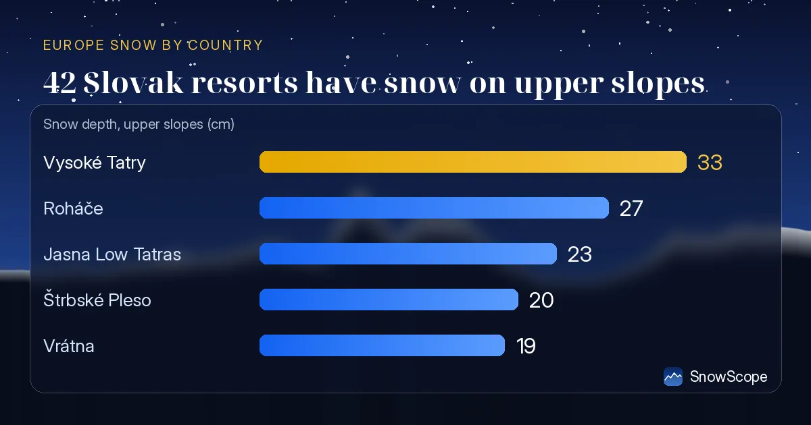

42 Slovak resorts have snow on upper slopes
Early November snow has reached 42 of Slovakia's 107 ski resorts, with the highest peaks now carrying decent cover. Vysoké Tatry leads the country with 33 cm measured at 2182 m elevation.
See the live snow forecast for Vysoké Tatry in the SnowScope appSnow depth, powder alerts and the 3D map, free.
Which resorts have snow now
Of Slovakia's 107 resorts mapped, 42 have snow on their upper slopes as of today. The snow line sits at 1100 m, which means lower resorts remain mostly bare ground. This is typical for late November in the High Tatras and Malá Fatra ranges, where altitude matters more than anywhere else in the country.
Vysoké Tatry holds the most snow at 33 cm, followed by Roháče at 27 cm and Štrbské Pleso at 20 cm. Snow depth drops quickly below 1500 m elevation: at that height, the average is only 2 cm, and cover sits at 61 percent. Below 1000 m, almost nothing has stuck.
| Resort | Snow depth | New snow, 72 h | Coming, next days | Top |
|---|---|---|---|---|
| Vysoké Tatry | 33 cm | 8 cm | 7 cm | 2,182 m |
| Roháče | 27 cm | 9 cm | 6 cm | 1,496 m |
| Jasna Low Tatras | 23 cm | 7 cm | 3 cm | 2,003 m |
| Štrbské Pleso | 20 cm | 9 cm | 6 cm | 1,822 m |
| Vrátna | 19 cm | 11 cm | 5 cm | 1,529 m |

Where the best conditions are
The High Tatras and Malá Fatra caught the heaviest snow in the past three days. Both regions recorded 11 cm of new snow during that period, well above the country average of 8 cm. The Low Tatras lagged with 7 cm, which explains why Jasna Low Tatras holds only 23 cm at its summit.
Roháče in Malá Fatra offers a rare advantage for lower resorts: it has accumulated 9 cm in 72 hours and sits at 27 cm total. Its top elevation of 1496 m works in its favour. Vrátna, also in Malá Fatra, shows 19 cm and received 11 cm of fresh snow, the equal-highest rate across all named resorts.

Snow depth by altitude
Above 2000 m, snow averages 28 cm and covers every slope. Between 1500 and 2000 m, depth falls to 18 cm on average, but coverage is still complete. This band holds most of Slovakia's skiable terrain.
The drop below 1500 m is sharp. Between 1000 and 1500 m, only 2 cm lies on the ground on average, covering 61 percent of slopes. Lower still, almost nothing survives: the band from 500 to 1000 m shows zero depth and just 4 percent cover. Early season in Slovakia always looks like this—terrain above 1500 m skis, everything else does not.
What the next week brings
More snow is coming. Thursday, 26 November, will be the snowiest day of the next week, with 6 cm forecast. Smaller falls of 7 cm are possible over the next three days overall, and up to 10 cm within seven days. This should push the snow line higher and fill gaps in the mid-altitude band.
Resort-level forecasts show Vysoké Tatry and Roháče gaining 7 and 6 cm respectively in the next three days. Vrátna and Štrbské Pleso should also rise by 5 and 6 cm. Even modest snow helps early season resorts above 1500 m find skiable base.
How the week has evolved
Snow coverage across Slovakia has bounced this week, rising and falling with individual storms. Seven days ago, 4640 square km held snow; that shrank to 2010 km2 by mid-week before recent falls pushed it back to 2470 km2 today. Vysoké Tatry has led the country for the past four days, holding steady at 30–34 cm.
The overall white share remains thin: only 13 percent of Slovakia's mapped terrain is snow-covered. But above 1500 m, the picture is completely different—there, 100 percent of slopes carry snow. The range is what defines the Slovak season.
What to expect on the slopes
Early-season snow is fragile. Thin coverage below 1500 m means rocks can lurk under the surface; stay on marked runs and ski carefully if conditions pull you lower. Above 1500 m, the base is now solid enough that upper slopes of Vysoké Tatry, Roháče and Štrbské Pleso should offer genuine skiing.
Before going off-piste, check the official avalanche bulletin for Slovakia. Early November snow is still settling and can shift quickly. The next week's weather will reset the snowpack again, so conditions change fast. Use the SnowScope app to track depth at your chosen resort and altitude band before you go.
Tips for skiers
- Ski above 1500 m: snow depth and cover are reliable there. Below that height, rocks are exposed and snow is sparse.
- Vysoké Tatry, Roháče and Štrbské Pleso have the deepest snow now. Plan your visit around those three resorts if depth matters.
- Thursday 26 November will see the most snow of the coming week (6 cm). That is the best day to chase fresh tracks.
- Check the official avalanche bulletin before any off-piste skiing, especially on new snow arriving in the next few days.
- Early November snow is thin and settles fast. Use the app to verify depth at your chosen altitude before you set out.
About these numbers
Resort snow depths are the deepest snow on the resort's upper slopes on the date shown; they are estimates for an area, not a measurement at one point. Forecasts can change. Always read the official avalanche bulletin before going off-piste.
Cite this report
For research, teaching or the press: the numbers and charts are free to reuse under CC BY 4.0 with this citation.
SnowScope (2026), 42 Slovak resorts have snow on upper slopes, https://snowscope.app/blog/en/2026/11/slovakia-resorts-with-snow-22-november-2026.html, accessed 2026-11-22
SnowScope (Atlas Labs). (2026, November 22). 42 Slovak resorts have snow on upper slopes. SnowScope snow reports. https://snowscope.app/blog/en/2026/11/slovakia-resorts-with-snow-22-november-2026.html
BibTeX
@misc{snowscope2026slovakiaresortswithsnow2,
author = {{SnowScope (Atlas Labs)}},
title = {42 Slovak resorts have snow on upper slopes},
year = {2026},
month = nov,
howpublished = {\url{https://snowscope.app/blog/en/2026/11/slovakia-resorts-with-snow-22-november-2026.html}},
note = {Published 2026-11-22 20:35 UTC; accessed 2026-11-22}
}· CC BY 4.0 · Methods, data and tools →
Vysoké Tatry: snow and temperature by height, this winter vs last (tools) →
Follow Vysoké Tatry
Free: a message when fresh snow is coming, and the forecast every morning.
More snow reports

Snow is falling on Slovenia's ski mountains today: about 37 cm on Kanin and 21 cm on Krvavec. Where the snow lies, how it compares with past winters, and the next snowy day.

Tornik on Zlatibor had up to 39 cm on its upper slopes on 15 November 2026; by Wednesday it had melted. Kopaonik barely turned white. The week day by day and what comes next.

Savin Kuk above Žabljak picked up 22 cm of snow from 13 to 19 November and still has 6 cm today. Kolašin 1450 and 1600 are bare. The week day by day, and the next chances.